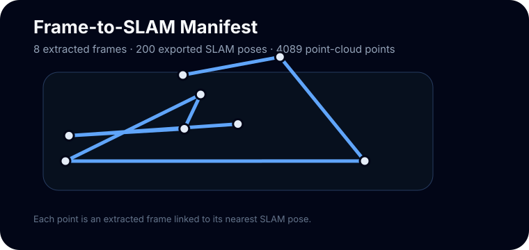

From egocentric video to a renderable 3D scene
This walkthrough follows the reconstruction preparation path: sample frames, export calibration, align poses, generate COLMAP commands, then move toward NeRF or 3D Gaussian Splatting.
Sample Outputs
Camera Path Intuition

A camera position and orientation at one timestamp.
Sparse 3D points reconstructed from visual tracking.
A synthesized camera view rendered from the learned scene.
Frames
Frame extraction controls the tradeoff between runtime and visual overlap. Too few frames make matching brittle; too many frames slow down downstream optimization.
python scripts/reconstruction_demo.py --frame-stride 180 --max-frames 24
Command Map
Extract frames and export calibration from the sample episode.
Run COLMAP feature extraction, matching, mapping, and undistortion.
Use NeRFStudio or 3DGS templates after poses and images are ready.
Concept Lab
These are the main ideas behind the reconstruction stack. Click each one to see the intuition before running heavy tools.
Frame extraction
Frame extraction turns a long egocentric video into a set of images. The spacing matters: too sparse means weak overlap; too dense means slower reconstruction.
Why First-Person Reconstruction Fails
Fast head or hand movement weakens feature matches.
Hands, kettle, dripper, and water move independently from the room.
A wide field of view needs the correct camera model or undistortion step.
Frames may not share enough common texture for stable matching.
Bad matches can pull camera poses away from the real trajectory.
Glass, water, and metal can create inconsistent appearance.
Run This Locally
DATA_ROOT.pip install -e ".[dev]".ego-recon-demo --data-root "$DATA_ROOT" --output-dir outputs/sample_demo --frame-stride 180 --max-frames 24
ego-recon-demo --parse-colmap-only --colmap-model outputs/sample_demo/colmap/sparse/0 --output-dir outputs/sample_demo
COLMAP Summary Preview
{
"num_registered_images": 24,
"num_sparse_points": 1200,
"mean_reprojection_error": 0.62
}